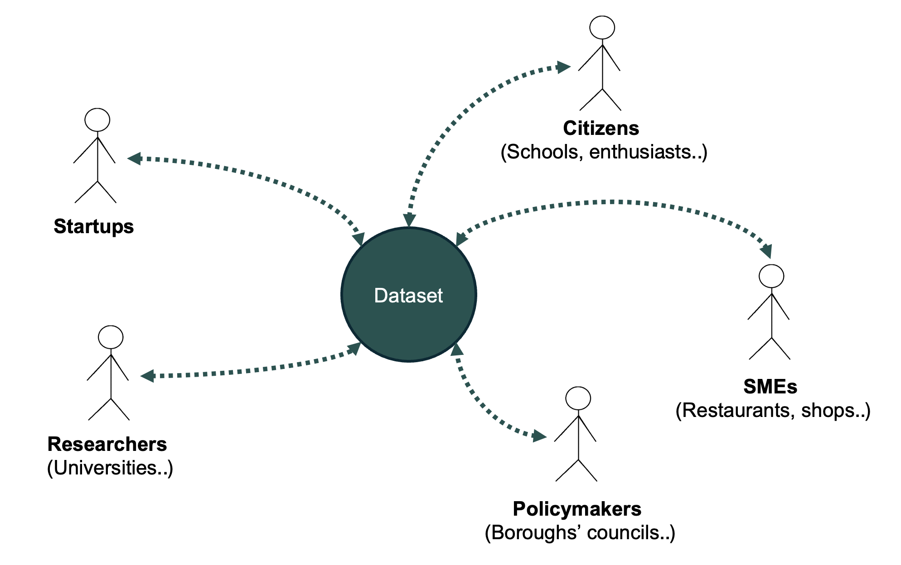
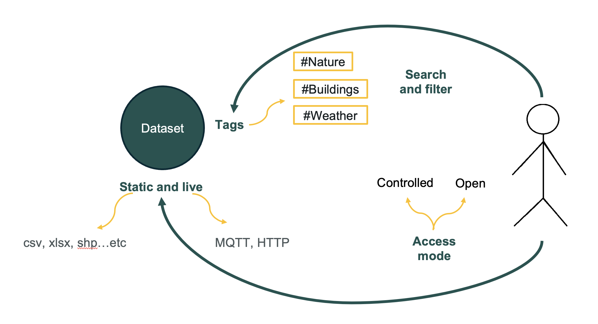
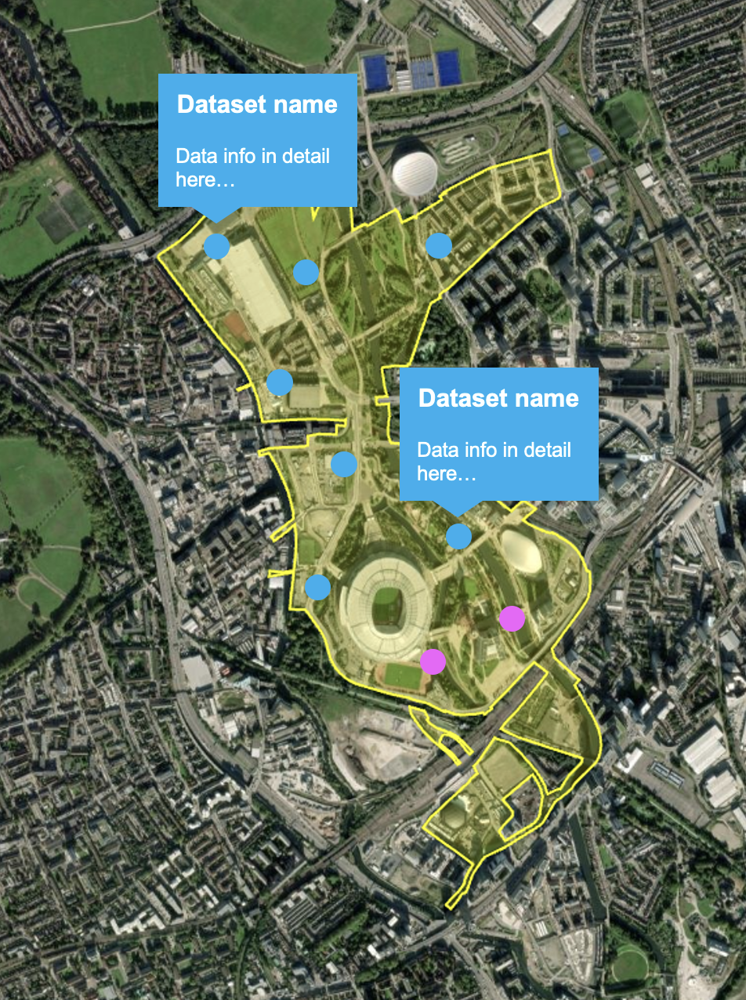
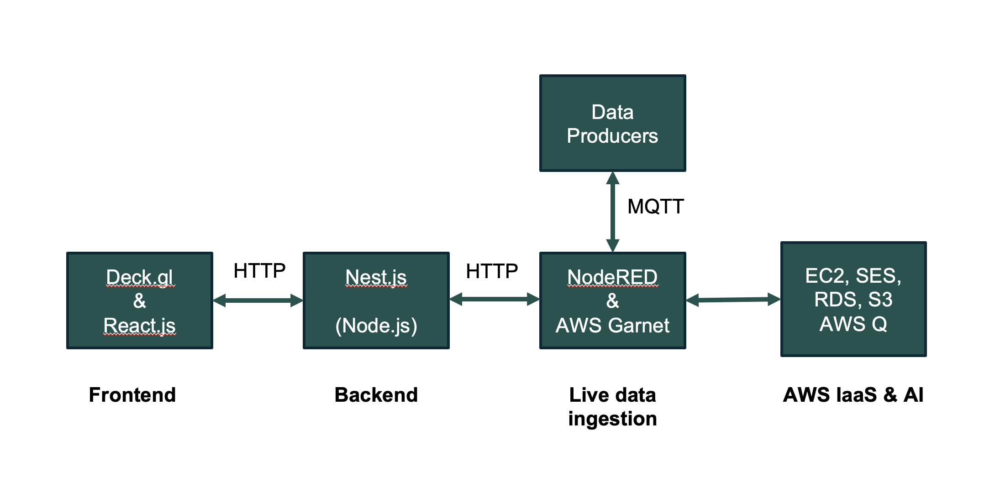
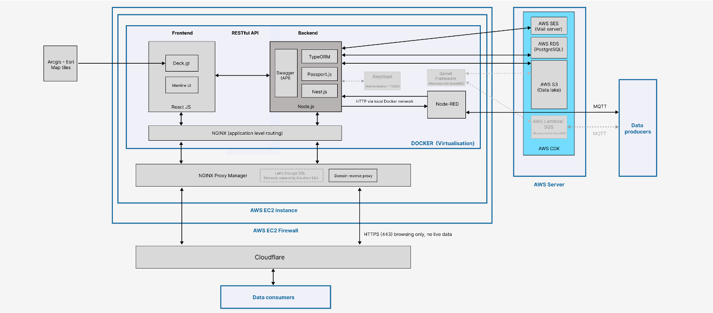
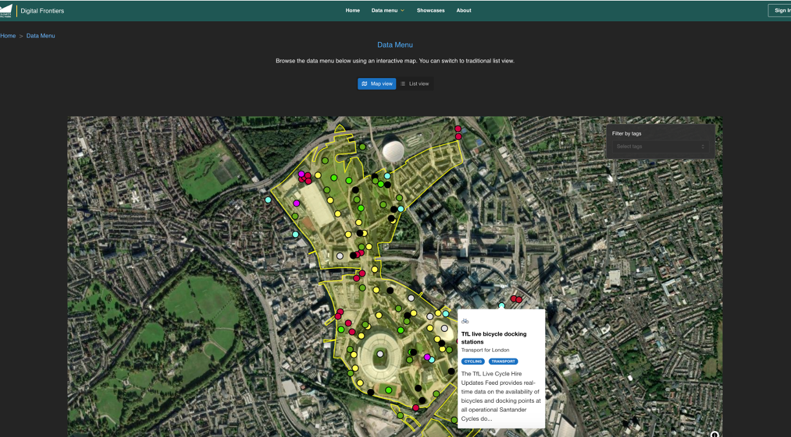
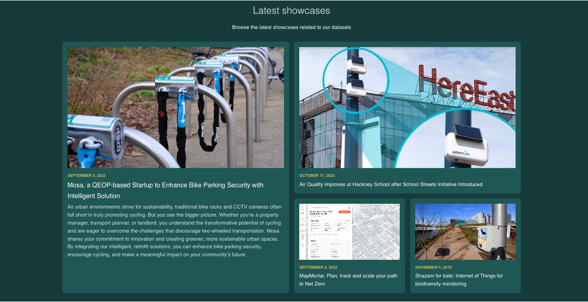

A living lab…
a test bed
Data examples:
- Environmental sensors
- Biodiversity records
- Buildings power usage & solar energy
- TfL data
Why this platform?
- What data is there in the Olympic Park and how use it?
- How can I contribute my live data to others?
Stakeholders

Platform concept
At the Heart: Datasets with Metadata

What this platform can offer?
- Explore datasets visually in the Queen Elizabeth Olympic Park.
- Each dataset is Geo-located including sensor locations.
- Data consumers can get dataset details
- Data providers can add new datasets

Technical design
Technologies
Frontend
Deck.gl & React.js
Backend
Nest.js (Node.js)
IoT
NodeRED & AWS Garnet
Cloud
EC2, SES, RDS, S3, AWS Q
Architecture – simplified

Architecture – full

Results
Give it a try!
digital-frontiers.co.uk


Data for impact: Showcases


Real-world applications using data from the platform
Summary and vision
So, what Digital Frontiers is about?
- ✅ Realtime data contribution
- ✅ Showcases: Data in a closed loop ecosystem
- ✅ Governance: aligning stakeholders across sectors
- ✅ Long term vision: Park → Borough → London → Other cities